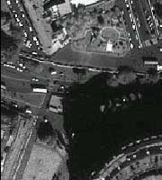
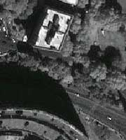
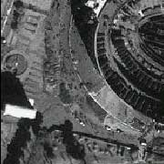
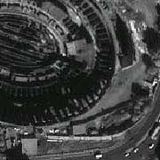
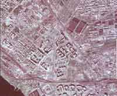

Цифровые космические и аэрофотоснимки местности.
Предоставляем услуги по поиску, подбору и подготовке материалов съемок для ГИС.
SPOT - разрешение 10 и 20 метров на местности.
LANDSAT - разрешение 15 и 30 метров на местности и многие другие.
|  |
 |
SPACE IMAGING
ЦГИ ИГРАН является официальным распространителем уникальных космических
снимков высокого разрешения от SPACE IMAGING в России и СНГ и единственной
государственной организацией с соответствующими льготами. Съемка производится
постоянно с начала 2000 г. и вызывает громадный спрос во всем мире.
|
|  |
 |
Использование снимков позволит получить информацию о реальном состоянии
использования практически любой территории и восполнить дефицит актуальной
информации о местности, являющийся сейчас одной из наиболее острых проблем.
|
Пример космического панхроматического снимка метрового разрешения
на территорию Рима.
|  |
КФА-1000разрешение около 8 метров.
|